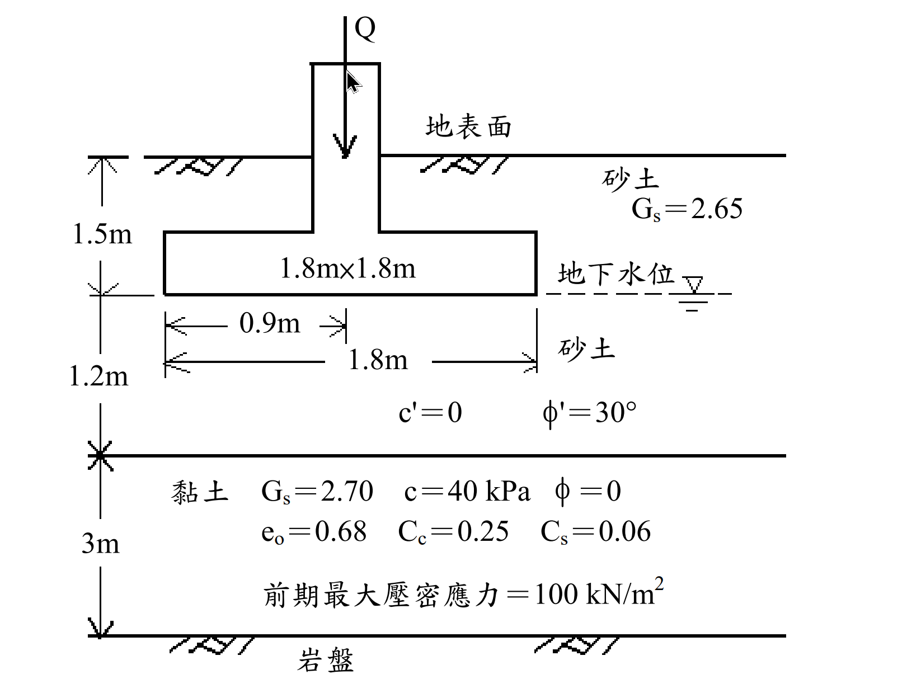

考題編號：SM-2011-3
主分類： SM-U1-3 土壤夯實及壓密
副分類： SM-U1-4 土體內應力
分析法： 有效應力法
標籤： 2:1應力分布 過壓密黏土 壓密沉陷量 部分飽和單位重
1. 原始題目重述 (Problem Restatement)
如下圖所示之 1.8m×1.8m 正方基礎承受 Q 為 1 MN 之鉛垂向之正方柱載重，假設砂土層之孔隙比 $e$ 為 0.65，比重 $G_s$ 為 2.65，地下水位以上砂土之飽和度為 50%；黏土層之比重 $G_s$為 2.70，壓縮性指數 $C_c$為 0.25，回脹性指數 $C_s$為 0.06，最初孔隙比 $e_o$ 為 0.68。其他參數如圖中所標示。
(一)假設壓力以 2：1（V：H）分布方式向下傳遞，試計算基礎中心下方黏土層之平均新增鉛垂向應力為若干（kPa）？
(二)試計算黏土層之壓密沉陷量為若干（mm）？（25 分）

圖說：基礎底寬 1.8m×1.8m，埋置深度 1.5m，受載 1MN。地下水位位於基礎底面。地層剖面由上至下為：1.5m 砂土(水位上)、1.2m 砂土(水位下)、3m 黏土、底層岩盤。
2. 考題核心精神與出題者意圖 (Core Concepts & Examiner's Intent)
本題測驗考生對於淺基礎沉陷量計算之完整流程掌握度，主要核心意圖包含：
- 部分飽和土壤之單位重計算：水位以上的砂土層給定 $S=50\%$，需正確代入三相圖公式求取濕單位重 $\gamma_t$。
- 2:1 應力分布法之應用：測驗是否能正確計算深度 $z$ 處之新增應力，並理解「平均新增應力」在實務上的簡化取法（通常取黏土層中央深度）。
- 過壓密狀態 (OCR) 的判別與沉陷量計算：給定前期最大壓密應力 $p_c'=100 \text{ kPa}$，考生必須先計算初始有效覆土應力 $p_0'$ 並與 $p_c'$ 比較。本題設計 $p_0' + \Delta\sigma$ 剛好跨越 $p_c'$，因此必須分段使用回脹指數 $C_s$ 與壓縮指數 $C_c$ 計算沉陷量。
3. 解題戰略地圖與陷阱分析 (Strategic Roadmap & Trap Analysis)
解題步驟：
- 求取各層單位重：分別計算水位上砂土 ($\gamma_t$)、水位下砂土 ($\gamma_{sat}$、$\gamma'$)、黏土 ($\gamma_{sat}$、$\gamma'$) 之單位重。
- 計算初始有效應力 $p_0'$：計算基礎中心下方、黏土層中央處之初始有效覆土應力。
- 計算平均新增應力 $\Delta\sigma_{avg}$：採用 2:1 應力分布法，計算黏土層中央深度之新增應力作為平均值。
- 判斷應力歷史並計算沉陷量 $S_c$：比較 $p_0'$、$p_c'$ 與 $p_0' + \Delta\sigma_{avg}$，代入過壓密雙段沉陷公式求解。
陷阱分析：
- 陷阱一：忽略水位以上的飽和度。若直接將水位上砂土視為乾燥 ($S=0$) 或忽略不計，將導致 $p_0'$ 計算錯誤。
- 陷阱二：計算 $\Delta\sigma$ 的深度 $z$ 定義。2:1 應力分布法的深度 $z$ 必須由「基礎底面」起算，而非地表面。至黏土層中央之深度 $z = 1.2 + 3.0/2 = 2.7 \text{ m}$。
- 陷阱三：沉陷量公式錯用。若未檢查 $p_0' + \Delta\sigma_{avg}$ 是否大於 $p_c'$，可能只套用 $C_s$ 計算，忽略了跨越 $p_c'$ 後進入正常壓密線的 $C_c$ 貢獻段。
3.5 變數層次分析 (Variable Hierarchy Analysis)
最終目標
求出黏土層之平均新增應力 $\Delta\sigma_{avg}$ 與最終壓密沉陷量 $S_c$。
本題關鍵公式（依計算順序）
-
土壤單位重推導：
$$ \gamma = \frac{G_s + S \cdot e}{1+e}\gamma_w $$ -
初始有效應力（黏土層中央）：
$$ p_0' = \Sigma (\gamma_i \cdot H_i) - u $$ -
2:1 應力分布（黏土層中央新增應力）：
$$ \Delta\sigma_{avg} = \frac{Q}{(B+z_m)(L+z_m)} $$ -
過壓密土壤沉陷量（當 $\boxed{p_0'} < p_c' < \boxed{p_0'} + \boxed{\Delta\sigma_{avg}}$）：
$$ S_c = \frac{C_s H}{1+e_0}\log\left(\frac{p_c'}{\boxed{p_0'}}\right) + \frac{C_c H}{1+e_0}\log\left(\frac{\boxed{p_0'} + \boxed{\Delta\sigma_{avg}}}{p_c'}\right) $$
L1：題目直接給定
| 符號 | 數值 | 說明 |
|---|---|---|
| $B \times L$ | $1.8 \text{ m} \times 1.8 \text{ m}$ | 基礎尺寸 |
| $Q$ | $1000 \text{ kN}$ | 柱載重 ($1 \text{ MN}$) |
| $e_{sand}$ | $0.65$ | 砂土孔隙比 |
| $G_{s,sand}$ | $2.65$ | 砂土比重 |
| $S_{top}$ | $50\%$ | 水位以上砂土飽和度 |
| $e_0$ | $0.68$ | 黏土初始孔隙比 |
| $G_{s,clay}$ | $2.70$ | 黏土比重 |
| $C_c$ | $0.25$ | 黏土壓縮指數 |
| $C_s$ | $0.06$ | 黏土回脹指數 |
| $p_c'$ | $100 \text{ kPa}$ | 黏土前期最大壓密應力 |
| $H_{clay}$ | $3.0 \text{ m}$ | 黏土層厚度 |
L2：需知識點推導
土壤單位重
| 符號 | 公式／來源 | 卡關? |
|---|---|---|
| $\gamma_{t,sand}$ | $\frac{G_s + S \cdot e}{1+e}\gamma_w$ | |
| $\gamma_{sat,sand}$ | $\frac{G_s + e}{1+e}\gamma_w$ | |
| $\gamma_{sat,clay}$ | $\frac{G_s + e_0}{1+e_0}\gamma_w$ | |
應力與沉陷計算
| 符號 | 公式／來源 | 卡關? |
|---|---|---|
| $p_0'$ | $\gamma_{t} H_1 + \gamma_{sand}' H_2 + \gamma_{clay}' (H_3/2)$ | |
| $\Delta\sigma_{avg}$ | $Q / [(B+z_m)(L+z_m)]$ | |
| $S_c$ | 雙段沉陷量公式加總 | |
L3：深層知識（不懂就卡住）
| 知識點 | 說明 | 卡關? |
|---|---|---|
| 平均應力選取法 | 實務上 2:1 法的「黏土層平均新增應力」多直接取中央深度 $z_m$ 計算。 | |
| OCR 沉陷段落判定 | 需清晰比較 $p_0'$、$p_c'$、$p_f'$ 才能決定公式，勿盲目套用單一公式。 |
4. 步驟化詳細計算過程 (Step-by-Step Detailed Calculation)
Step 1. 土壤各層單位重計算
假設水的單位重 $\gamma_w = 9.81 \text{ kN/m}^3$。
-
地下水位以上砂土 ($1.5 \text{ m}$)：
$$ \gamma_{t} = \frac{G_s + S \cdot e}{1+e}\gamma_w = \frac{2.65 + 0.5 \times 0.65}{1+0.65} \times 9.81 = \frac{2.975}{1.65} \times 9.81 = 17.69 \text{ kN/m}^3 $$ -
地下水位以下砂土 ($1.2 \text{ m}$)：
$$ \gamma_{sat,sand} = \frac{G_s + e}{1+e}\gamma_w = \frac{2.65 + 1.0 \times 0.65}{1+0.65} \times 9.81 = \frac{3.30}{1.65} \times 9.81 = 19.62 \text{ kN/m}^3 $$
有效單位重：$\gamma_{sand}' = 19.62 - 9.81 = 9.81 \text{ kN/m}^3$ -
黏土層 ($3.0 \text{ m}$)：
$$ \gamma_{sat,clay} = \frac{G_s + e_0}{1+e_0}\gamma_w = \frac{2.70 + 0.68}{1+0.68} \times 9.81 = \frac{3.38}{1.68} \times 9.81 = 19.74 \text{ kN/m}^3 $$
有效單位重：$\gamma_{clay}' = 19.74 - 9.81 = 9.93 \text{ kN/m}^3$
Step 2. 黏土層中央之初始有效應力 ($p_0'$)
取黏土層中央深度，即基礎底面下方 $1.2 \text{ m} + \frac{3.0}{2} \text{ m} = 2.7 \text{ m}$，距離地表為 $1.5 + 2.7 = 4.2 \text{ m}$。
$$ p_0' = \Sigma (\gamma \cdot H) - u $$
$$ p_0' = 17.69 \times 1.5 + 9.81 \times 1.2 + 9.93 \times 1.5 $$
$$ p_0' = 26.54 + 11.77 + 14.90 = \mathbf{53.21 \text{ kPa}} $$
(註：若精確計算，$26.535 + 11.772 + 14.895 = 53.20 \text{ kPa}$)
Step 3. 基礎中心下方黏土層之平均新增鉛垂向應力 ($\Delta\sigma_{avg}$)
💡 策略註解：使用 2:1 應力分布法，實務上通常將「黏土層中央處之新增應力」近似為整層之平均新增應力。
載重 $Q = 1 \text{ MN} = 1000 \text{ kN}$，基礎尺寸 $B \times L = 1.8 \text{ m} \times 1.8 \text{ m}$。
自基礎底面至黏土層中央之深度 $z_m = 1.2 + \frac{3.0}{2} = 2.7 \text{ m}$。
$$ \Delta\sigma_{avg} \approx \Delta\sigma_{z_m} = \frac{Q}{(B+z_m)(L+z_m)} $$
$$ \Delta\sigma_{avg} = \frac{1000}{(1.8 + 2.7)(1.8 + 2.7)} = \frac{1000}{(4.5)(4.5)} = \frac{1000}{20.25} = \mathbf{49.38 \text{ kPa}} $$
(一) 基礎中心下方黏土層之平均新增鉛垂向應力解答：
$$ \boxed{\Delta\sigma_{avg} = 49.38 \text{ kPa}} $$
Step 4. 黏土層之壓密沉陷量計算 ($S_c$)
判斷應力歷史：
- 初始有效應力：$p_0' = 53.20 \text{ kPa}$
- 前期最大壓密應力：$p_c' = 100 \text{ kPa}$
由於 $p_0' < p_c'$，此黏土層處於過壓密狀態 (Overconsolidated)。
計算最終有效應力 $p_f'$：
$$ p_f' = p_0' + \Delta\sigma_{avg} = 53.20 + 49.38 = \mathbf{102.58 \text{ kPa}} $$
因為 $p_0' < p_c' < p_f'$，沉陷量將分為兩段（回脹段 + 正常壓密段）：
$$ S_c = S_{c1} + S_{c2} = \frac{C_s H}{1+e_0}\log\left(\frac{p_c'}{p_0'}\right) + \frac{C_c H}{1+e_0}\log\left(\frac{p_f'}{p_c'}\right) $$
-
第一段 (回脹段, $p_0' \to p_c'$)：
$$ S_{c1} = \frac{0.06 \times 3000 \text{ mm}}{1 + 0.68} \log\left(\frac{100}{53.20}\right) = 107.14 \times \log(1.8797) = 107.14 \times 0.2741 \approx 29.37 \text{ mm} $$ -
第二段 (正常壓密段, $p_c' \to p_f'$)：
$$ S_{c2} = \frac{0.25 \times 3000 \text{ mm}}{1 + 0.68} \log\left(\frac{102.58}{100}\right) = 446.43 \times \log(1.0258) = 446.43 \times 0.01106 \approx 4.94 \text{ mm} $$
總壓密沉陷量：
$$ S_c = 29.37 + 4.94 = \mathbf{34.31 \text{ mm}} $$
(二) 黏土層之壓密沉陷量解答：
$$ \boxed{S_c = 34.31 \text{ mm}} $$
5. 關鍵爭議點與進階探討 (Critical Issues & Advanced Discussion)
- 關於 2:1 法「平均應力」的三種解讀方式：
在學理上，較厚土層（厚度 $H$ 較大時）的平均新增應力有以下幾種計算方式：
- 中央點法（本文採用）：直接取層厚中央之新增應力作為平均值。此法為多數國考參考書處理 2:1 分布時的預設做法，計算簡便（$\Delta\sigma = 49.38 \text{ kPa}$）。
- 辛普森法則 (Simpson's Rule)：$\Delta\sigma_{avg} = \frac{1}{6}(\Delta\sigma_t + 4\Delta\sigma_m + \Delta\sigma_b)$。本題中頂部 $\Delta\sigma_t=111.11 \text{ kPa}$，底部 $\Delta\sigma_b=27.78 \text{ kPa}$，帶入可得 $\Delta\sigma_{avg} = 56.07 \text{ kPa}$。此法常與 Boussinesq 公式搭配使用。
- 嚴格積分法：對 2:1 公式沿深度進行積分求平均：
$$ \Delta\sigma_{avg} = \frac{1}{H} \int_{z_t}^{z_b} \frac{Q}{(B+z)^2} dz = \frac{Q}{H} \left( \frac{1}{B+z_t} - \frac{1}{B+z_b} \right) $$
代入數值可得 $\Delta\sigma_{avg} = 55.56 \text{ kPa}$。
考場建議：題意既指明使用 2:1 的近似解法，多數閱卷標準可接受「中央點法」。若時間充裕，以辛普森法則或積分法計算亦可，但應於考卷上明確註明使用何種方法。若以積分法 $\Delta\sigma_{avg} = 55.56 \text{ kPa}$ 計算，沉陷量 $S_c$ 約為 $45.6 \text{ mm}$。
- 基礎自重與開挖解壓的考量：
本題敘述「基礎承受 Q 為 1 MN 之鉛垂向之正方柱載重」，並未提供基礎本身的厚度或混凝土單位重，故計算中將 $Q$ 視為淨載重 $\Delta P$。若實務題給定基礎版厚，則須計算淨外加載重 (Net applied load)：$\Delta P = Q + W_{foundation} - W_{soil\_excavated}$。